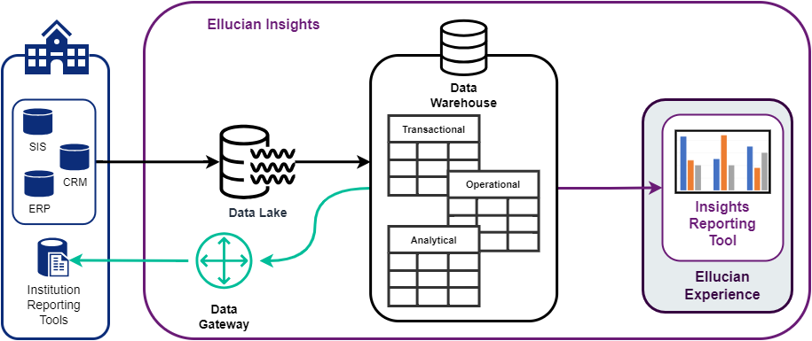

Connect your reporting tool to the Insights Data Warehouse
You can connect existing reporting tools to the Insights Data Warehouse using the Insights Data Gateway. The Data Gateway provides a single JDBC/ODBC connection using a site-to-site Virtual Private Network (VPN) between the Ellucian Cloud and your network. With this functionality, you can leverage your previously built reports with the Insights data models.
Before you begin
- Ensure you have the Insights Data Gateway connection details from the Ellucian Cloud team:
- Server: <Database IP Address>
- Port: <Database Port>
- Database: <Database Name>
- Username: <username>
- Password: <password>
- Ingest your data to the Insights Data Lake.
- Ensure that the most recent load to the Data Warehouse successfully completed.
- You have configured your display rules successfully.
For more information on these prerequisites, refer to the Insights administrator setup section of Ellucian Insights setup checklist.
About this task

The following steps outline the high-level process for creating a connection from your institution’s reporting tool to the Insights Data Warehouse.
Refer to your reporting tool's documentation for the detailed steps required to create a connection in your reporting tool.
Procedure
-
Complete these steps, as required by your reporting tool, on your reporting tool server.
- Download and install the PostgreSQL ODBC or JDBC drivers (or both). Some reporting tools may require the installation of both the 32-bit and 64-bit versions of the PostgreSQL ODBC drivers.
- Create a new PostgreSQL ODBC Data Source (32-bit, 64-bit, or both).
- Copy the PostgreSQL JDBC driver (*.jar) to the proper directory in your reporting tool's installation directory.
-
Complete these steps in your reporting tool's administrative dashboard or application.
- Create a new PostgreSQL data source connection.
- Enable the PostgreSQL data source connection.
- Grant users and groups access to the PostgreSQL data source connection.
What to do next
Refer to this Ellucian Customer Center article for an example of how to connect your reporting tool to the Insights Data Warehouse: Connecting Evisions Argos to the Ellucian Insights Data Warehouse.